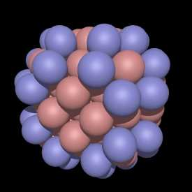
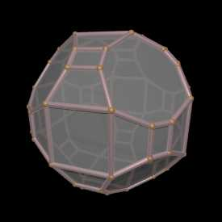

|
Root: 1
Radius: sqrt(2)
Spheres: 13
Vertices: 12
Faces: 14
Edges: 24
Area: 18.9282
Volume: 6 2/3
p0001.off
p0001.pov
s0001.pov
|
|
|
|
Consider spheres of radius 1/sqrt(2)
arranged such that the centers are only at integer
coordinate values and only where the sum of the coordinates x+y+z is even.
Such a packing is often referred to as CCP (Cubic Closest Packing), also
known as the IVM (Isotropic Vector Matrix) by R Fuller.
The odd and even layers of such a packing is illustrated below.
Note that the gaps between the spheres are at coordinates where
x+y+z is odd. Each sphere is surrounded by 12 closest neighbours in
a cuboctahedral arrangement.
|
|
Root: 2
Radius: sqrt(4)
Spheres: 19
Vertices: 6
Faces: 8
Edges: 12
Area: 27.7128
Volume: 10 2/3
p0002.off
p0002.pov
s0002.pov
|
|
|
|
A subset of the infinite CCP packing can formed by including only
those sphere centers within a certain radius from the origin.
If a integer is used to index these subsets, call it root, then if
the allowed radii are integer multiples of sqrt(2 root) then the
convex hull formed from the set of sphere centers is known as a Waterman
polyhedra.
|
|
Root: 3
Radius: sqrt(6)
Spheres: 43
Vertices: 24
Faces: 26
Edges: 48
Area: 64.8693
Volume: 45 1/3
p0003.off
p0003.pov
s0003.pov
|
|
|
|
The polyhedra along with the sphere
packings for root from 1 to 50 are shown here along with various
statistics. In addition, the polyhedra is given for each root in the
OFF format. While the
derivation of the polyhedra requires the determination of the convex
hull, the CCP subsets from which the convex hull is derived can be written
as a PovRay script, see: waterman.pov.
|
|
Root: 4
Radius: sqrt(8)
Spheres: 55
Vertices: 12
Faces: 14
Edges: 24
Area: 75.7128
Volume: 53 1/3
p0004.off
p0004.pov
s0004.pov
|

|
|
|
Note that the convex hull for root = 4 is the same shape as for
root = 1, there is a size difference though.
|
|
Root: 5
Radius: sqrt(10)
Spheres: 79
Vertices: 24
Faces: 14
Edges: 36
Area: 102.067
Volume: 81 1/3
p0005.off
p0005.pov
s0005.pov
|
|
|
|
A C program that creates the PovRay files for the sphere packings
shown here is: waterman.c. A PovRay scene
file that can be used to render the models is:
scene.pov.
|
|
Root: 6
Radius: sqrt(12)
Spheres: 87
Vertices: 32
Faces: 42
Edges: 72
Area: 119.682
Volume: 116
p0006.off
p0006.pov
s0006.pov
|
|
|
|
Root: 7
Radius: sqrt(14)
Spheres: 135
Vertices: 48
Faces: 26
Edges: 72
Area: 159.51
Volume: 172
p0007.off
p0007.pov
s0007.pov
|

|
|
|
Root: 8
Radius: sqrt(16)
Spheres: 141
Vertices: 54
Faces: 68
Edges: 120
Area: 168.975
Volume: 200
p0008.off
p0008.pov
s0008.pov
|
|
|
|
Root: 9
Radius: sqrt(18)
Spheres: 177
Vertices: 36
Faces: 38
Edges: 72
Area: 202.373
Volume: 248
p0009.off
p0009.pov
s0009.pov
|
|
|
|
Root: 10
Radius: sqrt(20)
Spheres: 201
Vertices: 24
Faces: 14
Edges: 36
Area: 214.277
Volume: 256
p0010.off
p0010.pov
s0010.pov
|
|
|
|
Root: 11
Radius: sqrt(22)
Spheres: 225
Vertices: 48
Faces: 50
Edges: 96
Area: 242.209
Volume: 338 2/3
p0011.off
p0011.pov
s0011.pov
|
|
|
|
Root: 12
Radius: sqrt(24)
Spheres: 249
Vertices: 24
Faces: 26
Edges: 48
Area: 259.477
Volume: 362 2/3
p0012.off
p0012.pov
s0012.pov
|
|
|
|
Root: 13
Radius: sqrt(26)
Spheres: 321
Vertices: 72
Faces: 74
Edges: 144
Area: 309.072
Volume: 494 2/3
p0013.off
p0013.pov
s0013.pov
|
|

|
|
In the CCP subsets shown here the blue spheres are exactly at the
integer multiple radius of sqrt(2 root). Note that some CCP subsets
don't have any spheres at that distance, for example, see root 14, 30, and
46. In these cases the polyhedra are the same as the earlier one, so
root 13 is the same as root 14, root 29 is the same as root 30, etc.
The longer list of roots (up to root 2000) when this occurs is:
14 30 46 56 62 78 94 110 120 126 142 158 174 184 190 206 222 224 238 248 254 270
286 302 312 318 334 350 366 376 382 398 414 430 440 446 462 478 480 494 504 510
526 542 558 568 574 590 606 622 632 638 654 670 686 696 702 718 734 736 750 760
766 782 798 814 824 830 846 862 878 888 894 896 910 926 942 952 958 974 990 992
1006 1016 1022 1038 1054 1070 1080 1086 1102 1118 1134 1144 1150 1166 1182 1198
1208 1214 1230 1246 1248 1262 1272 1278 1294 1310 1326 1336 1342 1358 1374 1390
1400 1406 1422 1438 1454 1464 1470 1486 1502 1504 1518 1528 1534 1550 1566 1582
1592 1598 1614 1630 1646 1656 1662 1678 1694 1710 1720 1726 1742 1758 1760 1774
1784 1790 1806 1822 1838 1848 1854 1870 1886 1902 1912 1918 1920 1934 1950 1966
1976 1982 1998
These "missing" polyhedra occur at position (14 + 16n)m2 where
n and m are integers greater than or equal to 0. (Steve Waterman).
|
|
Root: 14
Radius: sqrt(28)
Spheres: 321
Vertices: 72
Faces: 74
Edges: 144
Area: 309.072
Volume: 494 2/3
p0014.off
p0014.pov
s0014.pov
|
|
|
|
Root: 15
Radius: sqrt(30)
Spheres: 369
Vertices: 48
Faces: 26
Edges: 72
Area: 338.244
Volume: 542 2/3
p0015.off
p0015.pov
s0015.pov
|
|
|
|
Root: 16
Radius: sqrt(32)
Spheres: 381
Vertices: 60
Faces: 38
Edges: 96
Area: 352.44
Volume: 566 2/3
p0016.off
p0016.pov
s0016.pov
|
|
|
|
Root: 17
Radius: sqrt(34)
Spheres: 429
Vertices: 48
Faces: 62
Edges: 108
Area: 391.247
Volume: 697 1/3
p0017.off
p0017.pov
s0017.pov
|
|
|
|
Root: 18
Radius: sqrt(36)
Spheres: 459
Vertices: 54
Faces: 44
Edges: 96
Area: 413.991
Volume: 757 1/3
p0018.off
p0018.pov
s0018.pov
|
|
|
|
Root: 19
Radius: sqrt(38)
Spheres: 531
Vertices: 72
Faces: 74
Edges: 144
Area: 450.628
Volume: 869 1/3
p0019.off
p0019.pov
s0019.pov
|
|
|
|
Root: 20
Radius: sqrt(40)
Spheres: 555
Vertices: 72
Faces: 50
Edges: 120
Area: 461.112
Volume: 893 1/3
p0020.off
p0020.pov
s0020.pov
|
|
|
|
Root: 21
Radius: sqrt(42)
Spheres: 603
Vertices: 72
Faces: 74
Edges: 144
Area: 487.025
Volume: 973 1/3
p0021.off
p0021.pov
s0021.pov
|
|
|
|
Root: 22
Radius: sqrt(44)
Spheres: 627
Vertices: 72
Faces: 50
Edges: 120
Area: 505.712
Volume: 1013 1/3
p0022.off
p0022.pov
s0022.pov
|
|

|
|
Root: 23
Radius: sqrt(46)
Spheres: 675
Vertices: 48
Faces: 26
Edges: 72
Area: 526.167
Volume: 1045 1/3
p0023.off
p0023.pov
s0023.pov
|
|
|
|
Root: 24
Radius: sqrt(48)
Spheres: 683
Vertices: 56
Faces: 66
Edges: 120
Area: 544.319
Volume: 1144
p0024.off
p0024.pov
s0024.pov
|
|
|
{kind=link}